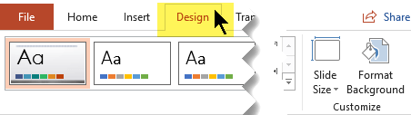
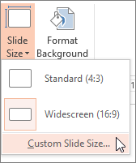
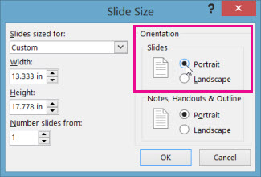

PowerPoint slides are automatically set up in landscape (horizontal) layout , but you can change the slide orientation to portrait (vertical) layout .
Select the Design tab:
Near the right end, select Slide Size, and then click Custom Slide Size.

In the Slide Size dialog box, select Portrait, then select OK.

In the next dialog box, you can select Maximize to take full advantage of the space available, or you can select Ensure Fit to make sure that your content fits on the vertical page.